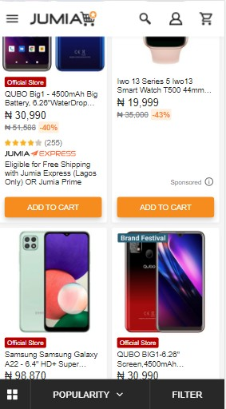

Hick's law
Jumia Shopping App
With many phone options and choices available, the jumia site save browsing time and eliminates distractions by introducing filters. This is in adherance to Hick's Law where every additional choice increases the time required to take a decision.
Fitt's law
Boomplay
Fitt's Law states that the bigger an object and the closer it is, the easier it is to use. This is why music streaming platforms like boomplay make the play button bigger and closer to ther thumb than other buttons.
Contrast
Coka Cola
Designers use contrast to emphasize certain elements and create a focal point to draw the viewer's attention. This is done excellently by Coka Cola with their Redand White color scheme. The red logo stands out sharply in contrast to the white background.